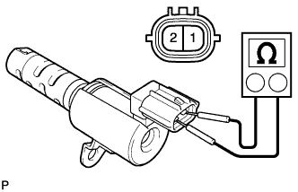
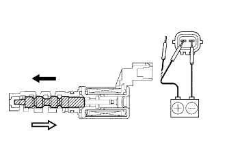

CỤM VAN ĐIỀU KHIỂN DẦU PHỐI KHÍ TRỤC CAM > KIỂM TRA |
| 1. KIỂM TRA CỤM VAN DẦU ĐIỀU KHIỂN PHỐI KHÍ TRỤC CAM |
|  |
Đo điện trở giữa của van điều khiển dầu.
|  |
Nối cực (+) ắc quy vào cực 1 và cực âm ắc quy vào cực 2, và kiểm tra sự thay đổi giá trị.
| Điều kiện | Điều kiện tiêu chuẩn |
| Điện áp dương ắc quy được cấp vào | Van di chuyển sang hướng mũi tên màu đen như trong hình vẽ. |
| Điện áp dương ắc quy được ngắt ra | Van di chuyển sang hướng mũi tên màu trắng như trong hình vẽ. |